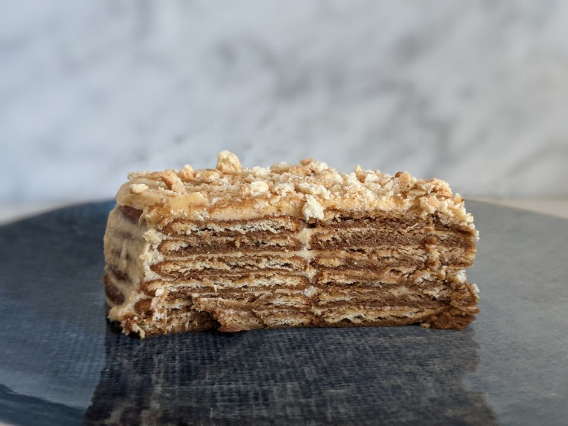

Bolo de Bolacha (Portuguese Biscuit Cake)

Description:
Bolo De Bolacha Maria loosely translates as Cake of Maria biscuits, and is a biscuit cake.
It is not your typical oven baked cake but a no-bake refrigerator cake.
The Portuguese brought their cuisine with them to Goa.
These took on Goan identities when the local Catholics adopted and adapted them.
The Bolo De Bolacha Maria is one of them. This Marie Biscuit Cake is similar to the Italian Tiramisu.
It is made of alternate layers of Marie biscuits dunked in coffee and a creamy buttercream.
Ingredients: (12 portions)
- 200 gm unsalted butter soft at room temperature
- 75 ml chilled cream whipping or 25% fat
- 1 tsp vanilla extract
- 1/3 cup unsweetened cocoa powder/li>
- 2 cups to 2 1/2icing sugar
- 50 Marie biscuits
- 1 cup coffee decoction or Espresso at room temperature
- Chocolate curls to decorate
Steps:
- First make the whipped buttercream. For this, place the soft butter in a bowl and beat with a hand held electric mixer till fluffy and pale. Beat in the chilled cream. Now beat in the vanilla extract, cocoa powder and about 2 cups of the icing sugar. If the whipped buttercream doesn’t feel thick or sweet enough, add as much of the remaining icing sugar as you feel is necessary.
- Keep this aside for the time being. If your ambient temperature is warm and buttercream feels very soft, refrigerate it for about 20 to 30 minutes till it firms up but can still be spread easily.
- Lightly butter and line an 8” cake tin with parchment paper. This makes unmoulding easier. Use a loose bottomed cake tin if you have one. Dip Marie biscuits in the coffee, one after another, and place them in a single layer across the bottom of the cake tin. About 7 biscuits should cover the bottom of the cake tin in a circle with one in the centre. Break some other biscuits into quarters. Dip these also in coffee and use these to fill the gaps. One and half biscuits should be good enough for each layer.
- Spread a thin, uniform smooth layer of the whipped buttercream over this layer. Repeat alternate layers of coffee dipped Marie biscuits and buttercream till you have 6 layers of biscuits. Finish with a layer of buttercream.
- Grate chocolate curls on the top to decorate. Refrigerate the cake for about 8 to 10 hours or till set. Overnight in the fridge works perfectly. Store in the fridge as the buttercream will soften at room temperature and become impossible to slice.